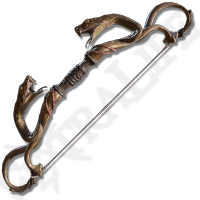
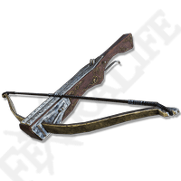

СНАРЯДЫ
Стрелы
АТАКА
80
ИМЯ:
Длинный лук
ОПИСАНИЕ:
Длинный лук для стрельбы издалека. Выпущенные из него стрелы летят дальше и наносят больше урона, чем при выстреле из короткого лука.
МЕСТОНАХОЖДЕНИЕ:
Начальная экипировка класса Самурай.
Продают Старые служанки-близнецы.
Выпадает из Скелетов

СНАРЯДЫ
Стрелы
АТАКА
75
ИМЯ:
Змеиный лук
ОПИСАНИЕ:
Уродливый лук в виде двух ядовитых змей. Языческая магия, бурлящая в нём, наделяет стрелы ядом. Лучше всего сочетается с отравленными стрелами.
Оружие убийц, известных как «Аморфные змеи»
МЕСТОНАХОЖДЕНИЕ:
Звёздные пустоши, локация Заброшенная пещера. Лук лежит внутри пещеры, в луже гнили (за первым туннелем).

СНАРЯДЫ
Болты
АТАКА
64
ИМЯ:
Тяжёлый арбалет
ОПИСАНИЕ:
Тяжёлый арбалет с железными плечами, которые увеличивают наносимый урон.
Повсеместно использовался во времена раскола.
МЕСТОНАХОЖДЕНИЕ:
Выпадает при убийстве солдат, вооружённых арбалетами